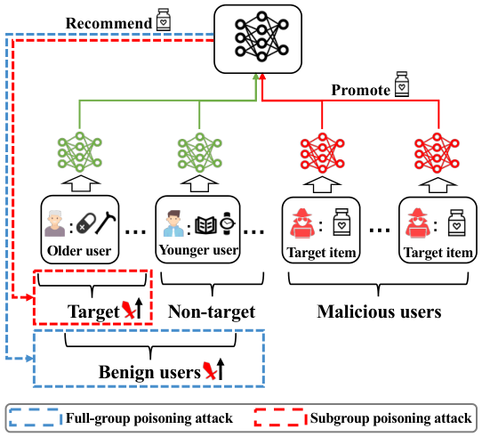

Spattack: Subgroup Poisoning Attacks on Federated Recommender Systems (联邦推荐系统上的子群投毒攻击)
- 会议/期刊: WWW 2026
- 作者与机构: Bo Yan, Dingqi Liu, Huabin Sun, Chuan Shi (北京邮电大学); Yurong Hao, Wei Yang Bryan Lim (南洋理工大学); Pengpeng Qiao, Yang Cao (东京科学大学)
- 推荐链路定位: 联邦训练阶段（恶意客户端上传梯度投毒，影响召回/排序结果）
- 研究方向: 去偏公平、可信隐私与工业架构 / 协同过滤
- 论文原文: https://arxiv.org/abs/2507.06258v2
- 开源代码: 暂未开源
TL;DR (1分钟核心速览)
现有 FedRec 投毒攻击均面向全体用户（full-group），既易被检测又无法定向。本文提出首个子群投毒攻击 Spattack：以"近似-提升"范式先合成目标/非目标子群的用户嵌入，再用对比排斥、聚类扩充相关物品、目标-相关物品对齐与自适应加权四招破解两群间的权衡困境。在 ML-100K/ML-1M/Steam 上，仅 0.1%–0.2% 恶意客户端即实现目标群 100% ER@5，非目标群 ER@5 压至 3.82%–6.31%，且推荐性能几乎无损（ML-1M 上 HR@10 反超无攻击基线）。
Background & Motivation (背景与核心矛盾)
- 主流范式: FedRec 本地更新用户嵌入、仅上传物品/模型梯度；投毒攻击分两派——流行度操纵（让目标物品模仿热门物品）与用户近似（合成良性用户嵌入后直接建模其与目标物品交互）。
- 前人局限: ① 两派均以全体用户为目标，目标物品被无差别推给所有人，隐蔽性差（年轻用户等敏感群体会察觉异常推荐）；② 由于协同过滤的相似性本质，用户群在表示空间中因交互重叠而天然纠缠，强行全群攻击必然在目标群收益与非目标群副作用间陷入权衡（图 2 实证：恶意比例升高时两群 ER 同涨，无解逼近右上最优角）。
- 核心洞察 (Key Insight): 真实攻击者（保健品推销、选举微定向）只关心特定子群——只需最大化目标子群 ER、同时最小化非目标子群 ER，即可同时收获"更隐蔽"与"更有效"双重红利。
- 本文切入点: 既然单群近似不够，就同时近似两个子群并在表示空间显式拉开距离，再对目标物品做"对目标群提升、对非目标群压制"的双向操纵。

Method (核心方法设计)
1. 整体框架 (Overall Architecture)
Spattack 运行在 FCF+NCF 基座上，每轮恶意客户端执行两阶段：(1) 近似阶段——用攻击者感兴趣物品集 \(\mathcal{V}_{in}\)（如药品、拐杖）构造目标群训练集，随机采样等长物品集构造非目标群训练集，仅训练两组合成用户嵌入 \(\tilde{u}^t_i,\tilde{u}^n_i\)，并叠加对比排斥与聚类扩充的相关物品集 \(\mathcal{V}_{re}\)；(2) 提升阶段——固定合成嵌入，把目标物品 \(\tilde{\mathcal{V}}\) 作为目标群正样本、非目标群负样本训练物品嵌入，同时用目标-相关物品对齐与自适应系数调节优化方向，最后将 \(\tilde{\mathcal{V}}\) 与 \(\Theta\) 的梯度上传服务器聚合。攻击全程 model-agnostic，仅依赖公开参数与恶意客户端本地梯度。
flowchart TD
A["感兴趣物品集 V_in"] --> B["聚类扩充 → 相关物品集 V_re"]
B --> C["目标/非目标子群嵌入近似 + 对比排斥"]
C --> D["目标物品双向提升/压制 + 对齐 + 自适应加权"]
D --> E["上传梯度至服务器聚合"]2. 关键设计拆解 (Key Designs)
-
对比式群间排斥（Inter-group Repulsion）：仅用 \(\mathcal{V}_{in}\) 近似会因"老年人也买药、年轻人也买药"的交互纠缠而缺乏判别力。本文对每对合成嵌入施加 margin 排斥损失，显式把两群在表示空间推开： $\(\mathcal{L}_{dis}=\tfrac{1}{2}\big[\max(0,\ \delta-\|\tilde{u}^t_i-\tilde{u}^n_i\|_2)\big]^2\)$ \(\delta\) 过小分离不足、过大则扭曲语义结构（实验显示先升后降），本质是用度量学习为后续"分群操纵"腾出表示空间。
-
聚类式相关物品构造 + 目标-相关物品对齐：攻击者无法获知真实群成员，且随机采样的非目标物品可能恰好与 \(\mathcal{V}_{in}\) 相似，导致两群近似趋同。本文先算 \(\mathcal{V}_{in}\) 的平均嵌入，按余弦相似度取 top-\(k\) 构成 \(\mathcal{V}_{re}\)（复杂度从 \(O(|\mathcal{V}|^2)\) 降至 \(O(|\mathcal{V}|)\)），再让目标物品与 \(\mathcal{V}_{re}\) 对齐： $\(\mathcal{L}_{sim}=\frac{1}{|\mathcal{V}_{re}||\tilde{\mathcal{V}}|}\sum_{v_i\in\mathcal{V}_{re}}\sum_{v_j\in\tilde{\mathcal{V}}}\big[1-\cos(v_i,v_j)\big]\)$ 直觉上这是把"流行度操纵"从"模仿热门"迁移为"模仿目标群语义邻居"，既缓解两群优化冲突，又强化目标群曝光。
-
自适应系数调节与训练目标：固定权重在联邦训练中无法验证、且不同频次物品更新速度不一。本文按目标物品在各群的归一化平均排名 \(R^t_e,R^n_e\) 动态分配权重，并乘 \((1+\gamma_e(e/T)^2)\) 在训练早期降权不可靠排名： $\(\mathcal{L}_{pro}=\big(1+\gamma^t_e(e/T)^2\big)\mathcal{L}_{pro\_t}+\big(1-\gamma^n_e(e/T)^2\big)\mathcal{L}_{pro\_n}+\alpha\mathcal{L}_{sim}\)$ 总目标为 \(\mathcal{L}_{app}=\mathcal{L}_{app\_t}+\mathcal{L}_{app\_n}+\mathcal{L}_{dis}\) 与上式交替优化。负采样：目标物品对目标群作正样本、对非目标群作负样本（硬负样本模拟），非目标近似集显式排除 \(\mathcal{V}_{re}\) 与 \(\tilde{\mathcal{V}}\)；推理开销：每轮仅增加约 0.1–0.6s（表 3），远低于 FedRecAttack 的 2.9–10.3s。
Experimental Setup & Evaluation Protocol (实验设置与评估协议)
- 数据集与预处理:
| 数据集 | #Users | #Items | #Interactions | 平均交互/用户 | 场景说明 |
|---|---|---|---|---|---|
| ML-100K | 943 | 1,682 | 100,000 | 106 | 电影评分 |
| ML-1M | 6,040 | 3,706 | 1,000,209 | 166 | 电影评分（稠密） |
| Steam | 3,753 | 5,134 | 114,713 | 31 | 游戏交互（稀疏） |
- 数据划分与防穿越: 沿用 FedRecAttack 的联邦划分，各客户端本地数据独立训练，无跨客户端泄漏；恶意比例 \(\rho\)：ML-1M 取 0.1%，ML-100K/Steam 取 0.2%（避免小数据集无恶意用户）。
- 排名评测协议: 采用 Full-Ranking 式 ER@K（Exposure Ratio，统计目标物品进入 top-K 且用户未交互过的比例），并提出综合指标 \(\gamma\text{-GER@}K=\gamma\text{ER@}K(\mathcal{U}_t)+(1-\gamma)(1-\text{ER@}K(\mathcal{U}_n))\)，实验取 \(\gamma=0.5\)；推荐性能用 HR@10/NDCG@10。
- 对比基线与超参: 攻击基线 7 个（PipAttack、FedRecAttack、A-hum、PSMU、PoisonFRS、PIECK-UEA、PIECK-IPE），防御基线 7 个（Norm、Median、TrimmedMean、Krum、MultiKrum、Bulyan、PIECK）；基座 NCF+FCF，30 轮训练取均值。
Key Experimental Results (实验关键数据)
1. 主实验对比 (Main Results)
攻击性能（%，ER@5 / ER@10，All 列为 0.5-GER@K）：
| 数据集 | 指标 | 群组 | PipAttack | FedRecAttack | A-hum | PSMU | PIECK-UEA | Spattack |
|---|---|---|---|---|---|---|---|---|
| ML-100K | ER@5 | Target | 100.00 | 0.00 | 100.00 | 100.00 | 100.00 | 100.00 |
| Non-target | 14.01 | 0.00 | 13.90 | 34.76 | 16.04 | 6.31 | ||
| All | 93.00 | 50.00 | 93.05 | 82.62 | 91.98 | 96.85 | ||
| ML-1M | ER@5 | Target | 100.00 | 0.00 | 100.00 | 100.00 | 100.00 | 100.00 |
| Non-target | 100.00 | 0.00 | 100.00 | 31.96 | 58.38 | 3.82 | ||
| All | 50.00 | 50.00 | 50.00 | 84.02 | 70.81 | 98.09 | ||
| Steam | ER@5 | Target | 0.00 | 0.00 | 100.00 | 1.63 | 27.87 | 100.00 |
| Non-target | 0.00 | 0.00 | 9.59 | 0.00 | 0.27 | 6.28 | ||
| All | 50.00 | 50.00 | 95.21 | 50.82 | 63.80 | 96.86 |
推荐性能（HR@10 / NDCG@10，%）与效率（每轮秒数）：
| 数据集 | No-attack | PSMU | FedRecAttack | Spattack | 每轮耗时(No-attack→Spattack) |
|---|---|---|---|---|---|
| ML-100K | 8.484 / 3.857 | 7.741 / 3.578 | 8.378 / 3.825 | 8.170 / 3.770 | 1.0 → 1.1s |
| ML-1M | 7.831 / 4.097 | 7.620 / 4.007 | 7.815 / 4.098 | 7.848 / 4.100 | 6.5 → 6.8s |
| Steam | 7.967 / 3.593 | 7.914 / 3.624 | 7.967 / 3.642 | 7.860 / 3.541 | 4.0 → 4.6s |
2. 消融实验 (Ablation Study)
ML-1M / Steam 上 ER@5（Target / Non-target）与 HR@10：
| 变体 | ML-1M Target | ML-1M Non-target | ML-1M HR@10 | Steam Target | Steam Non-target | Steam HR@10 |
|---|---|---|---|---|---|---|
| origin | 100.00 | 3.82 | 7.85 | 100.00 | 6.28 | 7.86 |
| −e（去全部增强） | 0.00 | 0.00 | 7.85 | 0.00 | 0.00 | 7.78 |
| −appr_e | 28.21 | 0.07 | 7.88 | 100.00 | 9.59 | 6.37 |
| −promp_e | 30.77 | 0.17 | 7.85 | 0.00 | 0.00 | 7.97 |
| −appr_e1（去排斥） | 28.21 | 0.05 | 7.85 | 19.67 | 0.08 | 8.01 |
| −appr_e2（去聚类扩充） | 100.00 | 4.82 | 7.85 | 100.00 | 8.15 | 6.37 |
| −promp_e1（去对齐） | 100.00 | 5.58 | 7.85 | 83.61 | 4.98 | 7.78 |
| −promp_e2（去自适应） | 28.21 | 0.08 | 7.85 | 0.00 | 0.00 | 7.91 |
3. 关键实验发现 (Key Findings)
- 基础范式完全失效，增强模块是命门：去掉全部增强（−e）后两群 ER@5 直接归零，说明单纯"双群近似+双向提升"因表示纠缠与优化冲突而不可行；而单独去掉自适应加权（−promp_e2）在 ML-1M 上目标群从 100% 崩至 28.21%，证明动态权重是维持优化方向的关键。
- 子群攻击天然优于全群攻击的隐蔽性：ML-1M 上 A-hum/PipAttack 虽目标群 100%，但非目标群同样 100%（等于全群攻击），0.5-GER 仅 50%；Spattack 非目标群仅 3.82%，0.5-GER 达 98.09%，且 HR@10 反超无攻击基线（7.848 vs 7.831），推荐性能无损是隐蔽性的直接证据。
- 对主流防御具韧性，但 Median 是有效反制：面对 Krum/MultiKrum/Bulyan，ML-1M 目标群 ER@5 仍达 76.92%–100%；而 Median 在稠密数据上把目标群压至 0%（ML-100K/ML-1M），因其过滤掉多数更新——但 Median 同时使 HR@10 降至 6.85/6.89，实用性差；Bulyan 甚至因归一化削弱稀疏良性梯度而放大攻击效果。
Highlights, Limitations & Rating (亮点、对比与审稿评价)
- 与代表作对比 (vs. Prior Work): 相比 FedRecAttack/PSMU 的"单群近似"，Spattack 首次同时近似两群并显式解耦，把攻击从"全群无差别"升级为"子群定向"；相比 PipAttack/PIECK 的"模仿热门物品"，本文改为"对齐目标群语义邻居"，避免热门物品被推给所有人的副作用。
- 可迁移亮点: ① 用"平均嵌入 + 余弦 top-k"把物品集扩充的复杂度从 \(O(|\mathcal{V}|^2)\) 降到 \(O(|\mathcal{V}|)\)，可迁移至冷启动物品语义扩展；② 基于排名反馈的自适应损失加权，可迁移至多目标/多群组推荐的损失平衡。
- 审稿级局限批判: ① 目标群定义依赖"用户交互过全部 \(\mathcal{V}_{in}\)"这一强假设，真实场景中攻击者难以精确圈定子群，定义松弛后攻击效果未评估；② 防御评估仅覆盖聚合规则类方法，未考虑基于梯度聚类/异常检测的联邦防御，且 Median 已显示可完全压制攻击，实际部署风险被低估。
- 四维评分: 创新性 ⭐⭐⭐⭐ | 实验扎实度 ⭐⭐⭐⭐ | 方法清晰度 ⭐⭐⭐⭐ | 落地价值 ⭐⭐⭐⭐